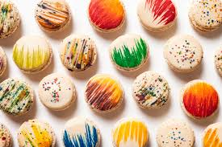
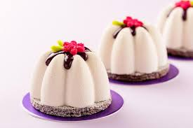
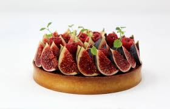
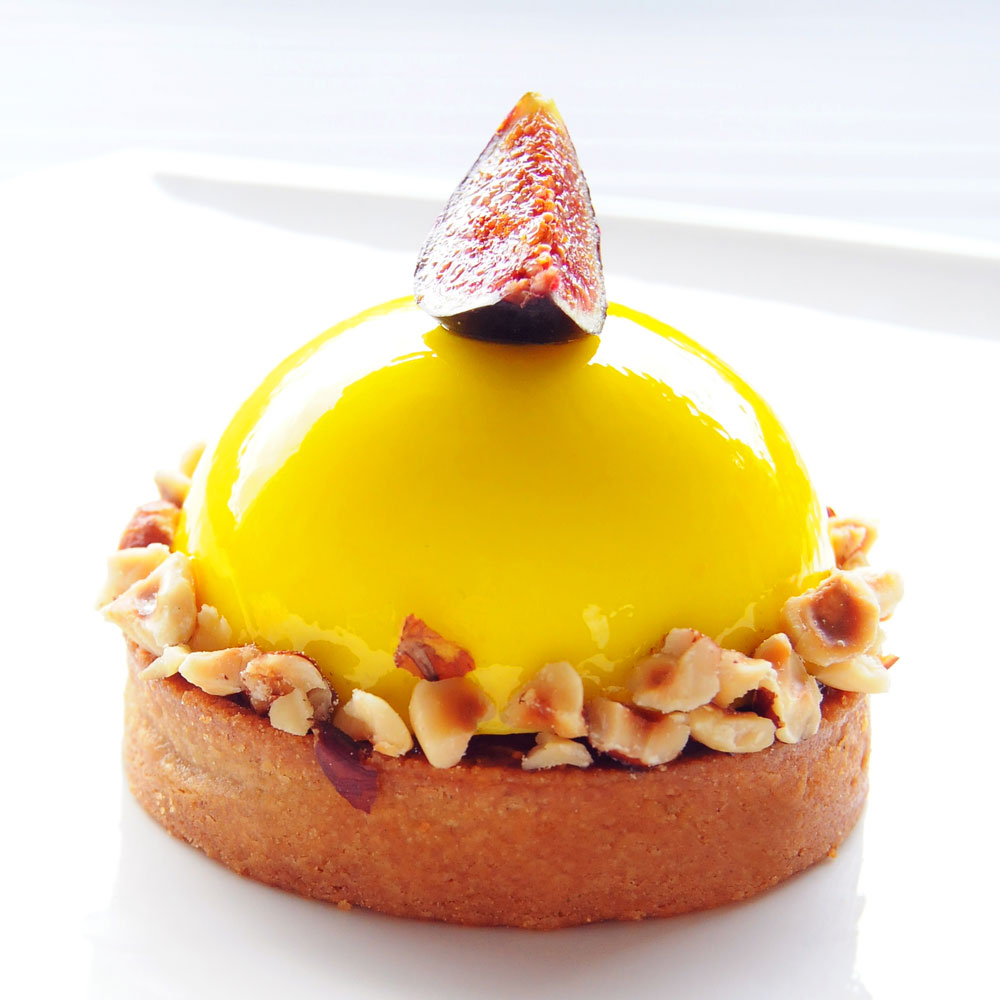

Macarons au chocolat
Commençons avec une recette 100% chocolat, nous essayerons d’en faire à d’autres parfums par la suite ! Voici donc les macarons au chocolat.
Des rochers coco framboise et chocolat blanc
Une recette express de rochers croustillants avec de la framboise, de la noix de coco et une petite touche de chocolat blanc pour une douceur que vous allez adorer ! Avec les rochers coco framboise et chocolat blanc, vous allez tout simplement vous régaler.
Tarte aux figues
C’est la saison des figues, alors courez vite en cueillir (ou allez faire un tour au marché 🙂 et réalisez ces délicieuses petites tartelettes aux figues avec un fond croustillant au spéculoos et une crème vanillée onctueuse au mascarpone ! Vous verrez, le résultat est explosif !
Tarte au citron
Je vous propose ma meilleure recette de tarte au citron meringuée, avec une pâte sablée maison, une crème citron équilibrée, et une meringue juste dorée. Un grand classique qu’il est facile de reproduire chez soi. Aucun ingrédient compliqué, pour les plus frileux utilisez une pâte sablée toute prête, pour les autres suivez la recette. Avec ou sans meringue, à vous de choisir.